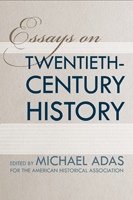

Probing the paradoxes of "the long twentieth century"—from unprecedented human opportunity and deprivation to the rise of the United States as a hegemon
Probing the paradoxes of "the long twentieth century"—from unprecedented human opportunity and deprivation to the rise of the United States as a hegemon


 Probing the paradoxes of "the long twentieth century"—from unprecedented human opportunity and deprivation to the rise of the United States as a hegemon
Probing the paradoxes of "the long twentieth century"—from unprecedented human opportunity and deprivation to the rise of the United States as a hegemon

|  |
Essays on Twentieth-Century Historyedited by Michael Adaspaper EAN: 978-1-43990-270-7 (ISBN: 1-4399-0270-4) |
In the sub-field of world history, there has been a surprising paucity of thinking and writing about how to approach and conceptualize the long twentieth century from the 1870s through the early 2000s. The historiographic essays collected in Essays on Twentieth-Century History will go a long way to filling that lacuna.
Each contribution covers a key theme and one or more critical sub-fields in twentieth century global history. Chapters address migration patterns, the impact of world wars, transformations in gender and urbanization, as well as environmental transitions. All are written by leading historians in each of the sub-fields represented, and each is intended to provide an introduction to the literature, key themes, and debates that have proliferated around the more recent historical experience of humanity.
Essays on Twentieth-Century History is an essential collection for scholars and students who wish to understand the recent past.
Contributors include: Paul Edwards, Carl J. Guarneri, Gabrielle Hecht, Adam McKeown, John H. Morrow, Jr., Jose C. Moya, Jean H. Quataert, Bonnie Smith, Howard Spodek, Robin Tucker, and the editor.
Excerpt available at www.temple.edu/tempress
"This collection of essays is part of a larger attempt to overturn the problematic periodization of the twentieth century that—at least in the schema of the global narrative—tends to serve as a coda to the nineteenth century.... Essays on Twentieth-Century History has considerable value in teaching at both the graduate and undergraduate levels. In both instances, the collection challenges readers to reconsider—or perhaps consider—the significance of the twentieth century in the still-developing narrative of global history. The various essays are accessible, provocative, and with many essays offering essential bibliographies, they represent a starting point for historians and historians in training."
— The Journal of World History
Introduction – Michael Adas
1. World Migration in the Long Twentieth Century – Jose C. Moya and Adam McKeown
2. Twentieth- Century Urbanization: In Search of an Urban Paradigm for an Urban World – Howard Spodek
3. Women in the Twentieth- Century World – Bonnie G. Smith
4. The Gendering of Human Rights in the International Systems of Law in the Twentieth Century – Jean H. Quataert
5. The Impact of the Two World Wars in a Century of Violence – John H. Morrow Jr.
6. Locating the United States in Twentieth- Century World History – Carl J. Guarneri
7. The Technopolitics of Cold War: Toward a Transregional Perspective – Gabrielle Hecht and Paul N. Edwards
8. A Century of Environmental Transitions – Richard P. Tucker
About the Contributors
Michael Adas is Abraham E. Voorhees Professor of History and Board of Governor's Chair, Rutgers University at New Brunswick. He is the author of numerous books and articles, including Machines as the Measure of Men, which won the Dexter prize in 1991, and more recently Dominance by Design. He is the co-author (with Peter Stearns and Stuart Schwartz), of World Civilizations: The Global Experience, which is now in its sixth edition.
Critical Perspectives on the Past, edited by Susan Porter Benson, Stephen Brier, and Roy Rosenzweig.
Critical Perspectives on the Past, edited by Susan Porter Benson, Stephen Brier, and Roy Rosenzweig, is concerned with the traditional and nontraditional ways in which historical ideas are formed. In its attentiveness to issues of race, class, and gender and to the role of human agency in shaping events, the series is as critical of traditional historical method as content. Emphasizing that history is itself an interpretation of material events, the series demonstrates that the historian's choices of subject, narrative technique, and documentation are politically as well as intellectually constructed.
© 2015 Temple University. All Rights Reserved. This page: http://www.temple.edu/tempress/titles/0886-3_reg.html.